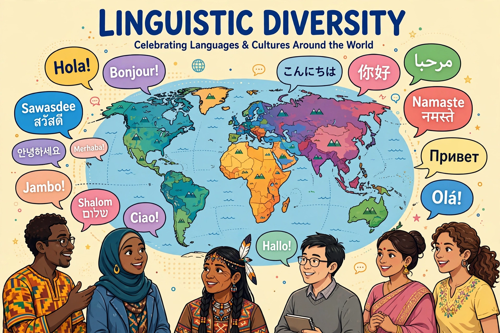

Linguistic diversity refers to the variety of languages spoken in a region, country, or the world as a whole, and to measures of that variety such as language density and diversity indices.

At a glanceEthnologue lists over 7,000 living languages. Distribution is highly uneven: Papua New Guinea, Indonesia, Nigeria, India, Cameroon and Australia are exceptionally diverse, while a handful of languages — English, Mandarin Chinese, Hindi, Spanish — are spoken by billions as first or second languages.
The Greenberg diversity index gives the probability that two randomly chosen people in a population speak different mother tongues. It approaches 1 in Papua New Guinea and 0 in highly homogeneous states.
UNESCO estimates a language dies roughly every two weeks; perhaps 40% of languages are endangered. Causes include globalisation, urbanisation, dominant-language schooling and stigma. See Endangered language and Language death.
Documentation, revitalisation programmes, mother-tongue education and digital archives aim to sustain diversity. International Day of Mother Language (21 February) promotes awareness.